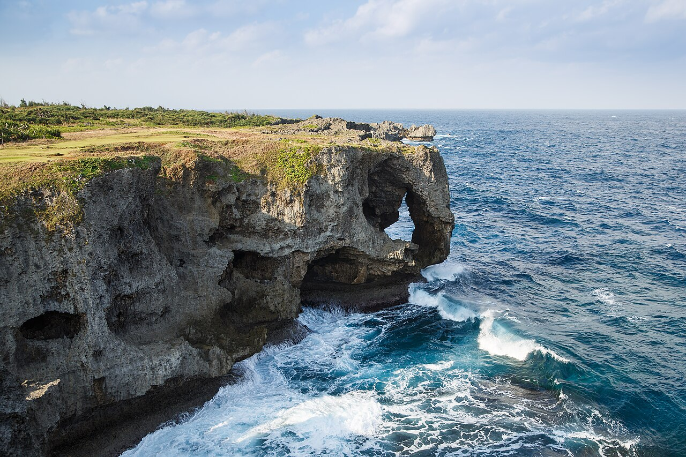

沖繩的度假象徵就在這一段海岸——大型度假飯店一字排開，面著東海的夕陽。真榮田岬的「青之洞窟」是浮潛潛水的招牌，想要慢慢泡在海邊度假，這裡最對。
部分連結為合作連結，不影響你的價格。詳見 免責聲明與合作揭露。
上午光線進得好、海也通常較平靜，藍得最漂亮。一定要事先預約，看天候可能臨時取消，要有備案。
西海岸的價值是「待在海邊」。留時間給飯店的海灘與泳池，比硬塞景點更值得。
飯店之間距離不近、外食要移動。定點度假可少開車，但想到處跑還是租車最自由。
飯店挑哪間、青之洞窟天候會不會取消——之後可以直接敲我們（SNS 籌備中）。先看看我們想做的事。